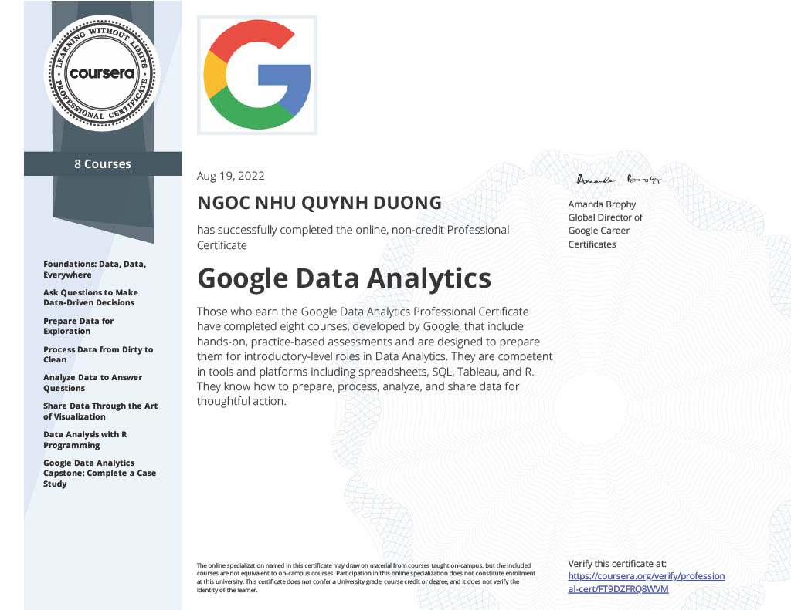

I hold a degree in Business Administration with a concentration in Finance and a minor in Data Analytics, having graduated in the top 3% of the School of Business. My academic journey has provided me with a deep understanding of capital budgeting analysis and the ability to construct robust financial models to evaluate investment opportunities, project future financial performance, and assess risks. As a proactive learner and dedicated professional, I have developed strong competencies in Python, SQL, and Tableau to analyze and visualize complex data. My hands-on experience includes leading collaborative projects, where I successfully guided my peers in major class projects, and honed my problem-solving and storytelling skills to convey data-driven insights effectively.
About Me
I have continually pursued personal projects that fuel my passion for understanding the evolving world of finance and data science, further enhancing my ability to make informed, data-driven decisions. Known for my organizational prowess and fast-learning abilities, I am adept at managing multiple tasks and projects efficiently, ensuring timely and high-standard deliverables. My commitment to lifelong learning and professional growth positions me to contribute significantly to your organization’s commercial and financial objectives. I am eager to bring my blend of financial acumen and leverage my expertise in data analytics and data science to uncover valuable insights and drive innovation within your team, helping your organization achieve its strategic goals.
My Notebooks
-
Notebook 1: YouTube Analytics Unveiled: Strategies for Channel Growth and Engagement
This project conducted an in-depth examination of YouTube channel performance across various categories by analyzing key metrics such as subscriber counts, viewership, and engagement rates. This analysis yielded valuable insights, enabling content creators to refine their strategies and achieve enhanced audience growth and engagement within their respective categories.
-
Notebook 2: Predicting Movie Success with Machine Learning

This project leveraged advanced machine learning techniques to predict movie revenue based on attributes such as budget, genre, and critical scores. By analyzing a comprehensive dataset of over 10,000 movies, the project aimed to uncover valuable insights and provide actionable recommendations to help movie production companies optimize their investment strategies and maximize revenue potential.
-
Notebook 3: Google Data Analytics Capstone
The Google Data Analytics Capstone Project focused on analyzing a comprehensive dataset from a bike-share program, consisting of approximately 6 million rows, to uncover rider usage patterns and trends. This analysis provided actionable insights to optimize bike availability, improve customer satisfaction, and inform marketing decisions for the bike-share company.
-
Notebook 4: The Primary Predictors of U.S. Housing Market Fluctuations
In the aftermath of the 2008 housing market crash, the affordability and sustainability of housing in the United States have become pressing issues. This study examines the significant macroeconomic determinants of U.S. residential house prices from 1987 to 2021, focusing on factors such as inflation, employment, income, and their implications for prospective home buyers.
-
Notebook 5: Prediction of Tesla's Stock Price Direction

In this project, I focused on predicting the daily price direction of Tesla stock by determining whether the next day's closing price would be higher or lower than the opening price. I utilized the scikit-learn library to implement several classical machine learning algorithms, including Logistic Regression, Decision Tree, Random Forest, and Gradient Boosting Ensemble. These models were tested and evaluated to identify which one best predicts the price direction, thereby aiding in making profitable trading decisions.
My Dashboards
Financial Statistic Dashboards System on Excel
Dashboard Overview and Insights
1. Income Sources Dashboard:
Breaks down revenue streams and tracks progress toward income targets through various charts, including a dynamic web chart, doughnut chart, line chart, and bar chart.
Provides insights on income trends, monthly averages, and a comparison of marketing strategies' impact on revenue.
Includes a yearly slicer for dynamic, time-based analysis.
2. Country Profit Analysis Dashboard:
Focuses on profitability by country with a dynamic map and doughnut chart.
Highlights tax breakdowns and allows year-by-year analysis with a slicer.
3. Sales Process Dashboard:
Visualizes the entire sales funnel, including stages, point-of-sale performance, and refund analysis.
Features sales progress charts and a yearly slicer for detailed comparisons.
Excel file (Read-only): Financial Statistic Dashboard Systems on Excel